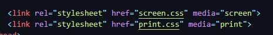

Usamos essa tecnologia provida pelas CSS para tornar nossos sites responsivos e adaptáveis para diversos tamanhos de telas. Uma Media Querie cria versões diferentes do estilo de um site dedicadas para específicos tamanhos de tela (celulares, TVs, impressão, dentre outros).
Um dos jeitos mais simplórios de usar Media Queries é através da identificação de um arquivo CSS. Ao realizar um link em um HTML para um arquivo CSS, podemos adicionar um atributo "media", que especifica para o navegador, a qual tipo de mídia (media type) aquele estilo está direcionado.
Por exemplo, se quisermos criar duas folhas de estilos, uma para a tela, e outra para a impressão do site, podemos criar as seguintes linhas de link de CSS:
No entanto, existe uma grande limitação ao utilizar essa abordagem. Ao utilizar o media type "screen", não conseguimos identificar qual tipo de tela estamos trabalhando, sendo impossível adaptar nosso site para vários tipos de tela diferentes (celulares, tablets e TVs, por exemplo). Para resolver esse problema, dentro da media type screen, podemos utilizar Media Features, para especificar o tamanho da tela.